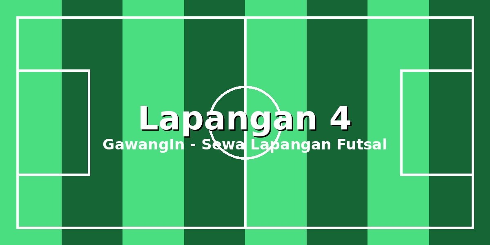
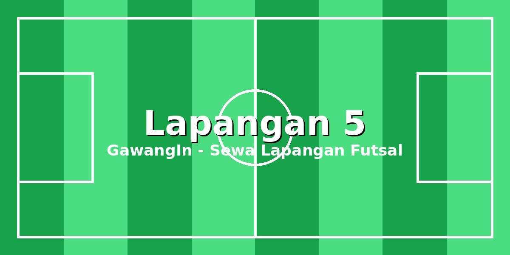

GawangIn adalah platform web yang mempermudah pemesanan sewa lapangan futsal secara online, memberikan kemudahan dan keuntungan bagi pengguna. Dengan GawangIn, Anda bisa menemukan berbagai pilihan lapangan futsal yang lengkap berdasarkan lokasi, harga, dan fasilitas, semuanya dengan proses yang praktis tanpa perlu repot datang langsung. GawangIn juga menawarkan banyak manfaat, seperti diskon spesial dan cashback eksklusif, jaminan harga terbaik tanpa biaya tersembunyi, serta fleksibilitas untuk memilih waktu bermain sesuai kebutuhan. Didukung dengan layanan pelanggan 24/7, GawangIn memastikan pengalaman memesan lapangan futsal Anda cepat, nyaman, dan menguntungkan, sambil ikut mendukung komunitas futsal dan pemilik lapangan lokal.